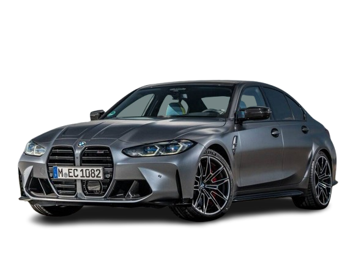
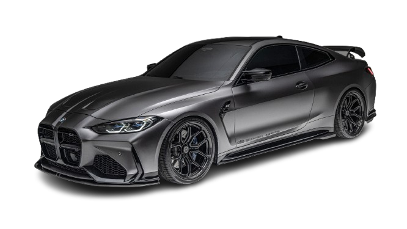
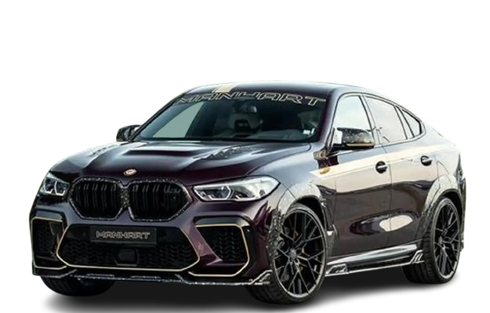

BMW
Historia de la marca
BMW (Bayerische Motoren Werke) es una marca alemana fundada en 1916. En sus inicios, la empresa se dedicaba a la fabricación de motores de avión, pero con el tiempo pasó a producir motocicletas y automóviles de alta calidad.
Fundadores
BMW no tiene un único fundador, pero figuras como Karl Rapp y Gustav Otto fueron clave en su creación. La empresa se desarrolló en Alemania como una fabricante de motores antes de convertirse en una marca de coches.
Primer coche
El primer coche de BMW fue el BMW 3/15, lanzado en 1929. Este modelo marcó el inicio de la marca en el mundo del automóvil.
Datos importantes
- Fundación: 1916
- País: Alemania
- Nombre completo: Bayerische Motoren Werke
- Especialidad: Coches de lujo y deportivos
Modelos famosos
- BMW M3
- BMW M4
- BMW X


